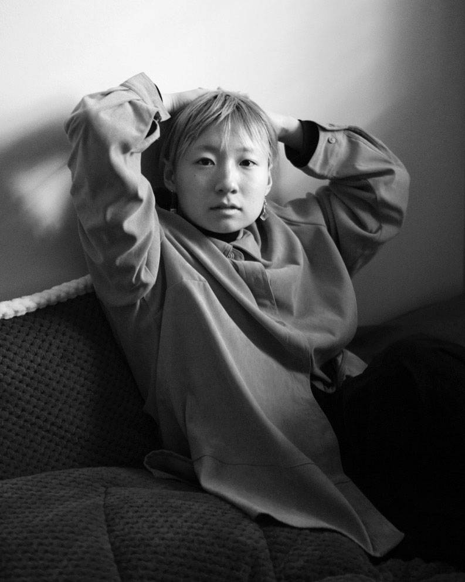

INTERACTIVE UI/UX
Creative Technologist,
Experimental Programmer,
Interdisciplinary Designer,
& Multimedia Artist.

Hi, I'm Hanul. My name means "sky" in native Korean language and is a pure Hangul word. I was born in the 90s and grew up by the ocean & mountains of South Korea. I've been studying, working, and living in New York City since 2018. I completed my BFA in Design & Technology at Parsons School of Design with a minor in Data Visualization and my BA in Culture & Media at Eugene Lang College of Liberal Arts at The New School. Welcome to my site! Please look around!
My work varies from a machine-trained images to 3D immersive VR narrative to a poem animated as a website. The software tools and digital interfaces that I use vary as much as the topics and themes of my work, and I continue
to learn new technologies. My diverse body of work shares an overarching drive for subversion of structures and elevation of contents. I believe these two themes present themselves most brilliantly when explored together, just as
structure and content enhance or supplement one another in close interconnection.
The brilliant thinker and leader of our time Ruha Benjamin said: "Remember to imagine and craft the world you cannot live without, just as you dismantle the ones you cannot live within." My creative process involves re-interpreting the status quo from critical perspectives, re-imagining its content and structure as thoroughly and freely as possible, and re-constructing them in virtual, mixed,and physical realms. I believe the process of crafting various versions of the world helps us perceive a better world in our tangible reality.
The brilliant thinker and leader of our time Ruha Benjamin said: "Remember to imagine and craft the world you cannot live without, just as you dismantle the ones you cannot live within." My creative process involves re-interpreting the status quo from critical perspectives, re-imagining its content and structure as thoroughly and freely as possible, and re-constructing them in virtual, mixed,and physical realms. I believe the process of crafting various versions of the world helps us perceive a better world in our tangible reality.
Born in the mid 90s in South Korea and growing up in the early 2000s, I've had the privilege to witness the emergence of digital culture that soon permeated into all aspects of our lives. I've experienced the earliest online media
services such as Korea's very first social network platform Cyworld and the digital comics genre Webtoon that is produced, distributed, and appreciated entirely online. As
an enthusiastic participant of both, I naturally grew an intimate understanding of innovative platforms that can create entirely new elements of our culture, and have been fascinated with how digital culture can change our lives so
intricately.
As a creative technologist, I seek imaginative ways to use information technology. As an experimental programmer, I utilize engineering tools to draw fun computational forms. As a transdisciplinary designer, I produce interactive experiences using various softwares. As a multimedia artist, I capture and critique the visual culture of today and future with mixed media. Above all, I am a rigorous learner and an eager thinker, and such aspects of myself have led me to work with what I do today. The intersection of art, design, media, and technology excites me profoundly.
As a creative technologist, I seek imaginative ways to use information technology. As an experimental programmer, I utilize engineering tools to draw fun computational forms. As a transdisciplinary designer, I produce interactive experiences using various softwares. As a multimedia artist, I capture and critique the visual culture of today and future with mixed media. Above all, I am a rigorous learner and an eager thinker, and such aspects of myself have led me to work with what I do today. The intersection of art, design, media, and technology excites me profoundly.